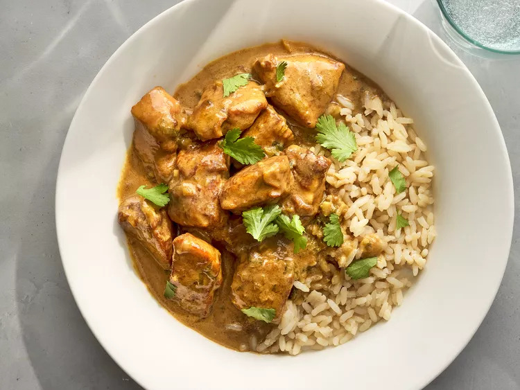

Thai Green Curry Chicken

Description
This Thai green curry recipe never fails to please! It is quick and easy to
make and the chicken stays moist and tender. Serve over jasmine rice for a
satisfying meal.
Ingredients
- 1 tablespoon dark soy sauce
- 1 tablespoon all-purpose flour
-
1 pound skinless, boneless chicken breast halves - cut into 1 inch cubes
- 2 tablespoons green curry paste
- 2 green onions with tops, chopped
- 2 cups coconut milk
- 1 tablespoon fish sauce
- ½ cup cilantro leaves, for garnish